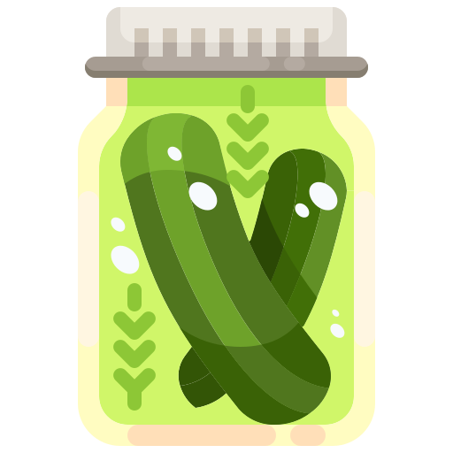

Viet Mami's Recipes
- 1 Cup Sugar
- 2 Flour
- 1/2tsp Baking powder
- 2 Cups Sugar
- 1 Butter
- 1/2 Cup Pick Juice
- 2 Cups Cream Cheese
- 1/2 Cup Whipped Cream
- 1 Cup Sugar
- 1/2 Cup Pickle Juice
- 1/2 Cup Diced Pickle
- Preheat oven to 350°
- Mix dry ingredients
- Cream butter and sugar in a separate bowl
- Mixed together the dry ingredients with the butter and sugar mixture
- Scoop the batter into your cupcake mould
- For the icing, whisk the whipped cream to a soft peak
- Mix in the cream cheese and sugar
- Piped the icing on the cooled down cupcakes
- Sprinkled the diced pickles on top
